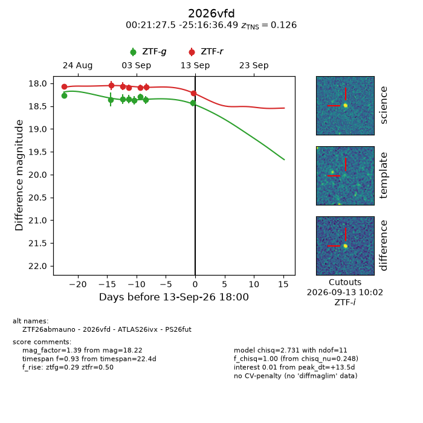
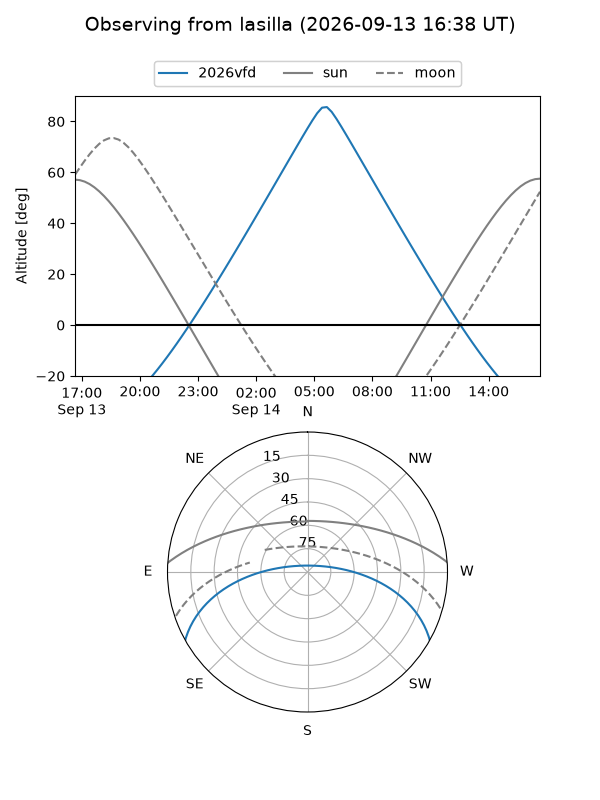
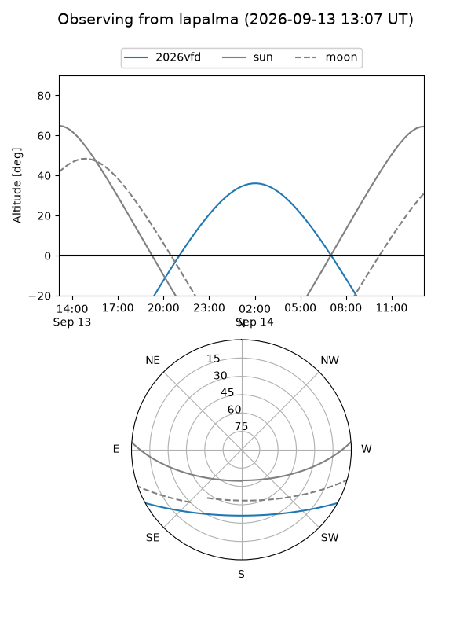
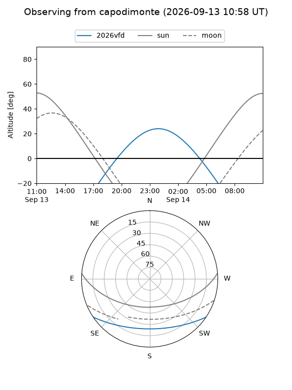
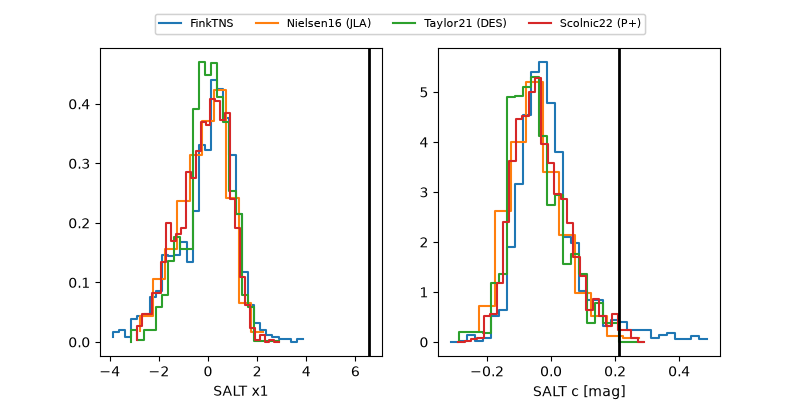

2026vfd
Target 2026vfd at 2026-09-13 18:02
Aliases and brokers:
FINK-ZTF: ztf.fink-portal.org/ZTF26abmauno
Lasair-ZTF: lasair-ztf.lsst.ac.uk/objects/ZTF26abmauno
ALeRCE-ZTF: alerce.online/object/ZTF26abmauno
YSE-PZ: ziggy.ucolick.org/yse/transient_detail/2026vfd
TNS name: wis-tns.org/object/2026vfd
Direct TNS query: direct search
alt names
ZTF26abmauno (ztf,fink_ztf)
2026vfd (tns,yse)
ATLAS26ivx (atlas)
PS26fut (panstarrs)
Coordinates:
equatorial (ra, dec) = 5.3646,-25.27680
equatorial (HMS+DMS) = 00:21:27.50,-25:16:36.49
galactic (l, b) = (46.6469,-83.02646)
Flags:
TNS type: SN IIn
TNS redshift: 0.1260
peak dt: +13.5
Photometry:
last ztfg=18.43, ztfr=18.22
8 ztfg, 7 ztfr detections
Lightcurve

Visibility



Additional plots
